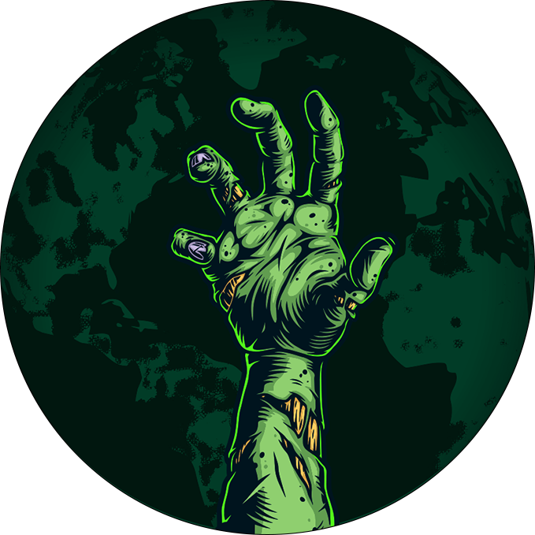

Third years ago I saw the first light of day. In my early days I spent a good deal amount on software development; developing and coding all over the place. Over the years I developed a questionably excessive interest and curiosity towards computers, with video games especially . I was always wondering how they were made, and spent more time in development than game designing. That curiosity turned me into what I am today, a creative professional yet still eager to learn more tricks of the trade.
In 2023 I am about to receive my bachelor's degree Computer Engineering at the Duzce University of Engineering Faculty. That was just the start as I had to keep improving myself as the industry moved forward. A very welcome challenge!
I've been learning many things along the way, gathered new insights and different techniques. New engines, new tools, new languages, improved my programing ability. In my spare time I sometimes work on personal projects, varying from commercial projects to small hobby projects - either way I'm always learning.
Game & Developer Portfolio
..and engineer.
Full Project
A thrilling, first-person, action-survival game set in the modern post-apocalypse. As mankind’s last hope, you’ll traverse the hospital ravaged by a lethal plague. the fight for survival gets progressively more difficult as the story unfolds. Be ready for violence
Download: Steam
